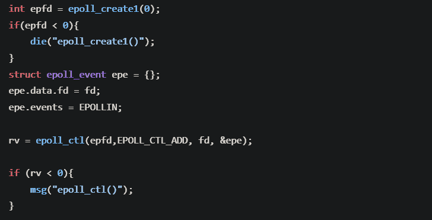
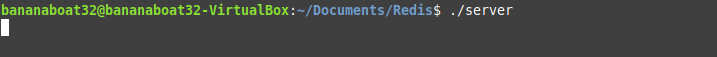
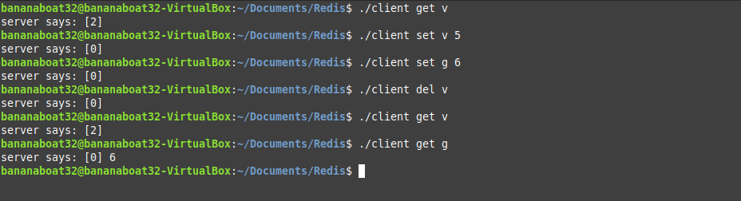

Simple Redis
Full Code
This is a simple redis that implements sockets in order to handle trasmission of data between a server and a client. It demonstrates an understanding of the use of basic networking techniches, bit transfer, and the epoll() function in order to monitor the availability of connections, and then the transfer of data for those connections.
The first was monitoring for an initial connection using a listening socket. To do this I passed the file descriptor of a listening socket to a epoll() instance.
I then used a while loop to wait for the listening pocket find a connection. When it does, we add the file descriptor of that connection to our epoll() instance. We continue this loop, each time executing whatever i/o data is available from the connection and adding new connections as they become available.

We the use some trivial code to do the bit transfers for the client and the server. I implemented three commands, set (to create a connection), get (to get the data from that connection), and del(to remove a connection). In this way we can monitor the data stored in our server by making connection from out client. We first run our server, and create a socket to listen from.
We are then able to send commands from a client, set data values, get those data values, and delete those values.
